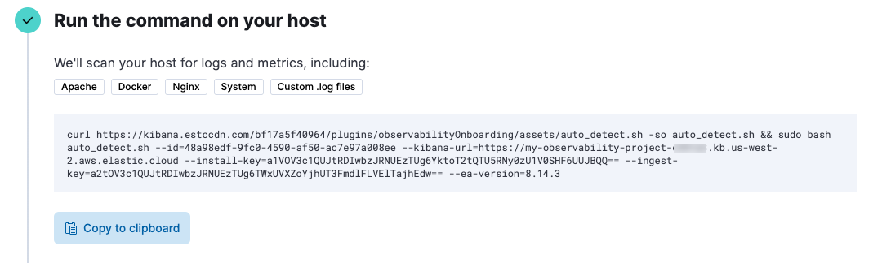

Quickstart: Monitor hosts with Elastic Agent
editQuickstart: Monitor hosts with Elastic Agent
editThis functionality is in technical preview and may be changed or removed in a future release. Elastic will work to fix any issues, but features in technical preview are not subject to the support SLA of official GA features.
In this quickstart guide, you’ll learn how to scan your host to detect and collect logs and metrics, then navigate to dashboards to further analyze and explore your observability data. You’ll also learn how to get value out of your observability data.
To scan your host, you’ll run an auto-detection script that downloads and installs Elastic Agent, which is used to collect observability data from the host and send it to Elastic.
The script also generates an Elastic Agent configuration file that you can use with your existing Infrastructure-as-Code tooling.
Prerequisites
edit-
A user with the
superuserbuilt-in role or the privileges required to onboard data. - Root privileges on the host—required to run the auto-detection script used in this quickstart.
Limitations
edit- The auto-detection script currently scans for metrics and logs from Apache, Docker, Nginx, and the host system. It also scans for custom log files.
-
The auto-detection script works on Linux and MacOS only. Support for the
lsofcommand is also required if you want to detect custom log files. - If you’ve installed Apache or Nginx in a non-standard location, you’ll need to specify log file paths manually when you run the scan.
- Because Docker Desktop runs in a VM, its logs are not auto-detected.
Collect your data
edit- In Kibana, go to Observability and click Add Data.
- Select Collect and analyze logs, and then select Auto-detect logs and metrics.
-
Copy the command that’s shown. For example:
You’ll run this command to download the auto-detection script and scan your system for observability data.
- Open a terminal on the host you want to scan, and run the command.
-
Review the list of log files:
-
Enter
Yto ingest all the log files listed. -
Enter
nto either exclude log files or specify additional log paths. EnterYto confirm your selections.
-
Enter
When the script is done, you’ll see a message like "Elastic Agent is configured and running."
There might be a slight delay before logs and other data are ingested.
Visualize your data
editAfter installation is complete and all relevant data is flowing into Elastic, the Visualize your data section will show links to assets you can use to analyze your data. Depending on what type of observability data was collected, the page may link to the following integration assets:
| Integration asset | Description |
|---|---|
System |
Prebuilt dashboard for monitoring host status and health using system metrics. |
Apache |
Prebuilt dashboard for monitoring Apache HTTP server health using error and access log data. |
Docker |
Prebuilt dashboard for monitoring the status and health of Docker containers. |
Nginx |
Prebuilt dashboard for monitoring Nginx server health using error and access log data. |
Custom .log files |
Logs Explorer for analyzing custom logs. |
For example, you can navigate the Host overview dashboard to explore detailed metrics about system usage and throughput. Metrics that indicate a possible problem are highlighted in red.
Get value out of your data
editAfter using the dashboards to examine your data and confirm you’ve ingested all the host logs and metrics you want to monitor, you can use Elastic Observability to gain deeper insight into your data.
For host monitoring, the following capabilities and features are recommended:
-
In the Infrastructure UI, analyze and compare data collected from your hosts. You can also:
- Detect anomalies for memory usage and network traffic on hosts.
- Create alerts that notify you when an anomaly is detected or a metric exceeds a given value.
-
In the Logs Explorer, search and filter your log data, get information about the structure of log fields, and display your findings in a visualization. You can also:
- Monitor log data set quality to find degraded documents.
- Run a pattern analysis to find patterns in unstructured log messages.
- Create alerts that notify you when an Observability data type reaches or exceeds a given value.
-
Use machine learning to apply predictive analytics to your data:
- Detect anomalies by comparing real-time and historical data from different sources to look for unusual, problematic patterns.
- Analyze log spikes and drops.
- Detect change points in your time series data.
Refer to the What is Elastic Observability? for a description of other useful features.